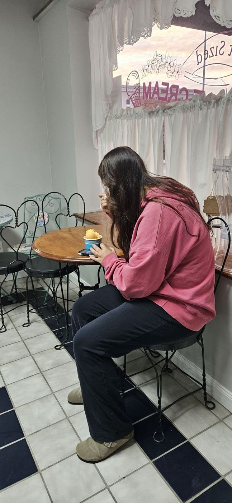

4.9★ sweet talk

“An ice cream place actually open in the winter! The Lemon bar ice cream is incredible and the staff is even sweeter! I'll be a repeat customer for sure.”
“Thanks to a quick Google search on the way home to Arkansas we found this gem. Hands down best ice cream cone I've found in ages, and the smell of fresh baked brownies needs to be its own candle scent. Definitely worth the detour if you're passing by Nevada.”
“This place has a wonderful variety of flavors at an affordable price. My go-to here is chocolate-covered cherry in a waffle cone. The gentleman behind the counter is always very polite :)”
“Love this place. Great ice cream and like the specialty flavors too.”
“Wonderful! Well worth the detour off of I-49. We were driving through on a road trip and stopped for ice cream. Every flavor we got was delicious and creamy and the portions were just right. The cookies also looked incredible, huge and chewy and delicious! Cute tiny shop with seating for 5-6 people inside and a couple benches outside, on an old-timey street in a has-been, nostalgic little town. Very cute!”
“10/10 if I could. The ice cream is amazing and the workers and I side make for an overall fun and nostalgic place to chill with friends, have a date, or even just have an ice cream to yourself. The pricing is amazing as well. For a large waffle cone with premium ice cream it is only $4.75 taxes included. Definitely recommend!”
“Love this place! Have visited a number of times. Great ice cream, love the shakes (salted caramel is my favorite). I need to try the giant cookies, they look amazing! Very friendly and they have a rewards card.”
“Neat little hand dipped ice cream shop! And fresh baked cookies! A bunch of flavors (24 I think). Some traditional, many new to me. Personal favorites are Blackberry and Chocolate Covered Cherry. My go to any time I’m thru Nevada!!”